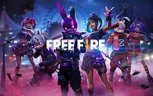
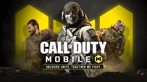
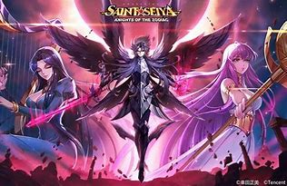
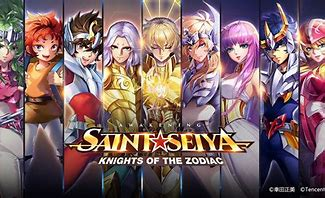
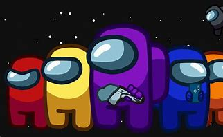
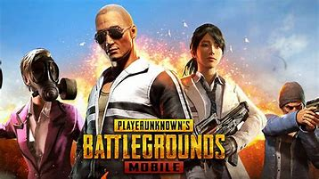

Os 5 melhores jogos para Android
Confira alguns dos melhores
jogos para Android para você jogar
este ano! Jogos de ação que fazem
sucesso, sendo os preferidos o
Garena Free Fire e a versão para
celular de Call of Duty.
A nostalgia também marca presença com
o jogo dos Cavaleiros do Zodíaco, o
Saint Seiya Awakening: Knights of
the Zodiac. O sucesso de Among Us
também continua forte ao longo do
ano.
Garena Free Fire
-

- 
-

O jogo é no gênero Battle Royale e você cai de paraquedas numa ilha paradisíaca para tentar sobreviver. O jogo é bem rápido. São 49 rivais e um máximo de 10 minutos para completar a missão de eliminar todos os outros adversários.
Estilo: Ação
Modo de jogo: Online
Gratuito
Call of Duty mobile
- 
É a versão para celular do jogo de tiro em primeira pessoa que já era um sucesso na versão para console. Baseado em combates da infantaria na Segunda Guerra Mundial, Call of Duty na variação mobile tem o mesmo modo clássico de combate 5x5 e o modo Battle Royale contra 99 adversários.
Estilo: Ação
Modo de jogo: Online
Gratuito
Saint Seiya Awakening: Knights of the Zodiac
- 
- 
Use a estratégia para montar a sua equipe dos Cavaleiros do Zodíaco e participe de combates incríveis. O jogo é em 3D e tanto a trilha sonora quanto os dubladores japoneses são os originais do anime, ou seja, nostalgia pura.
Estilo: RPG
Modo de jogo: Online
Gratuito
Among Us
- 
ogo que foi um fenômeno em 2020, Among US continua juntando milhares de pessoas para batalhas de estratégia fantásticas em 2021. O game consiste em um grupo de pessoas online reunidas em uma sala, onde duas delas são aleatoriamente colocadas como impostores, capazes de matar outros personagens ao longo das partidas. O grupo se reúne para apontar quem eles acham que são os impostores. Mentiras, traições e muita estratégia é o que te espera em Among Us.
Estilo: estratégia
Modo de jogo: online
Gratuito
PUBG mobile
- 
O famoso jogo PlayerUnknown's Battlegrounds ganhou uma versão exclusivamente mobile que agradou jogadores ao redor do mundo. Neste battle royale para ninguém botar defeito, você tem a chance de tentar sobreviver em partidas com até 100 jogadores.
Estilo: Ação
Modo de jogo: online
Gratuito